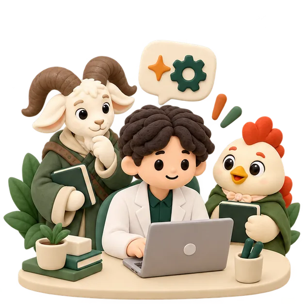
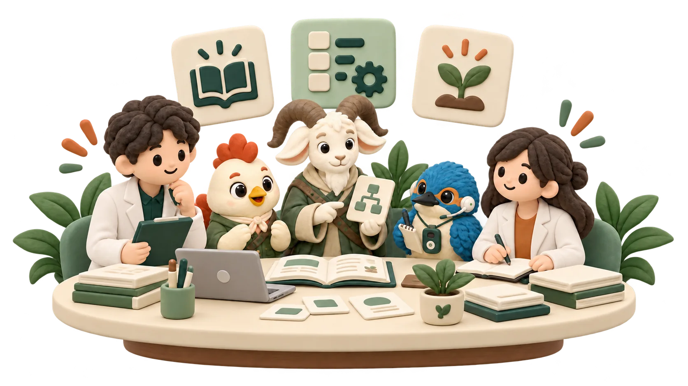
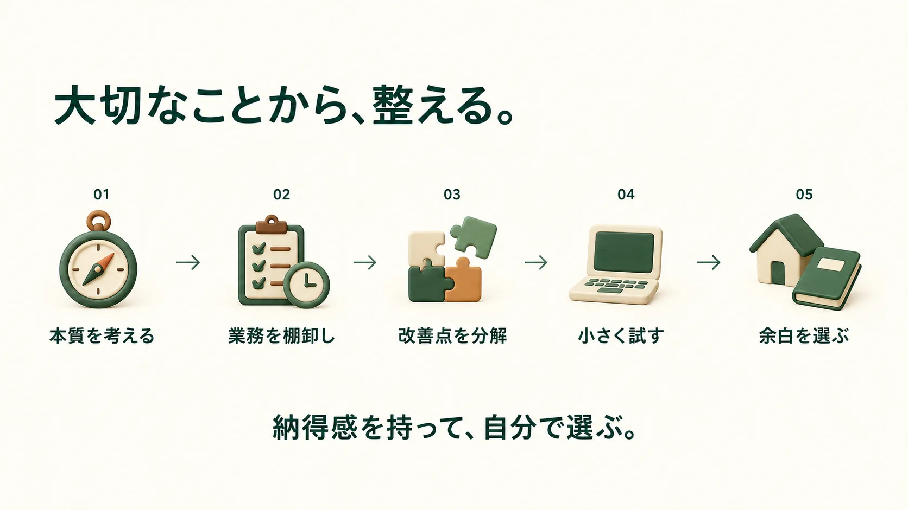
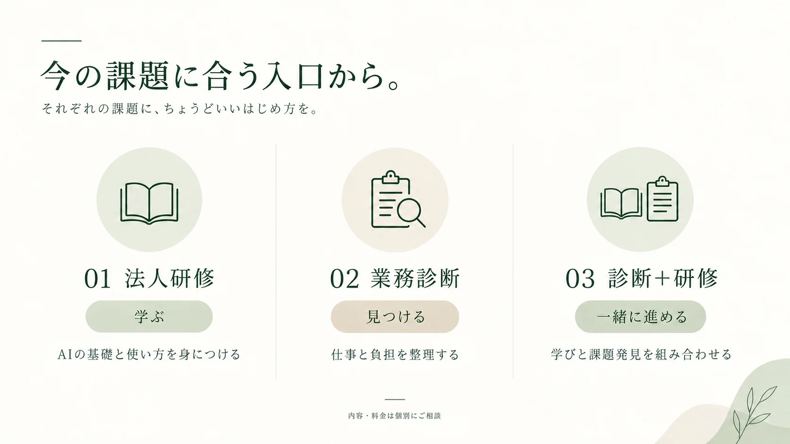
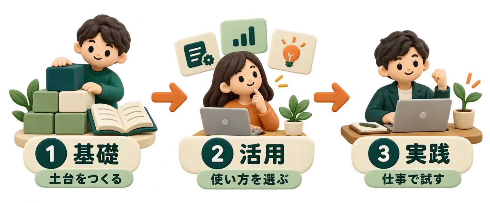
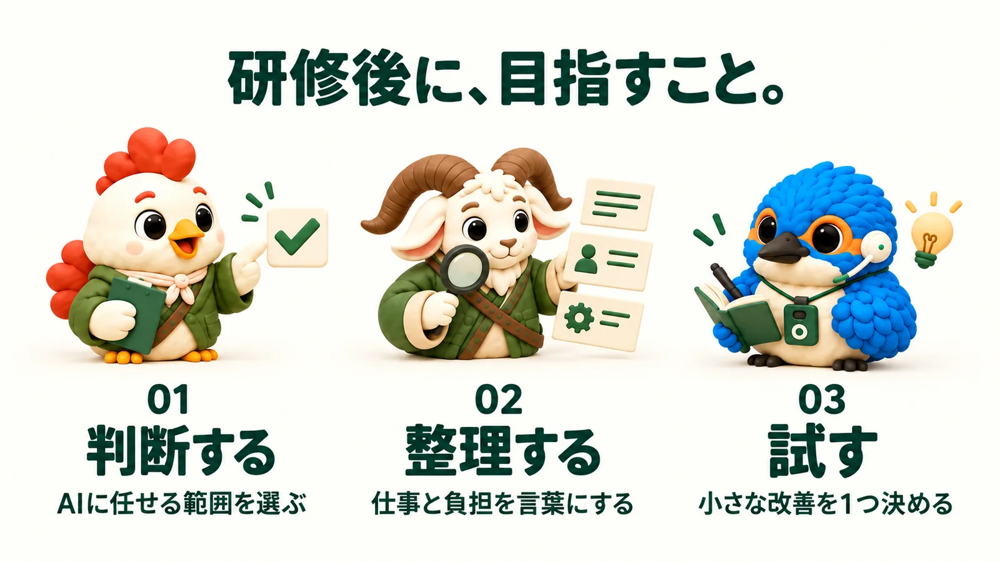
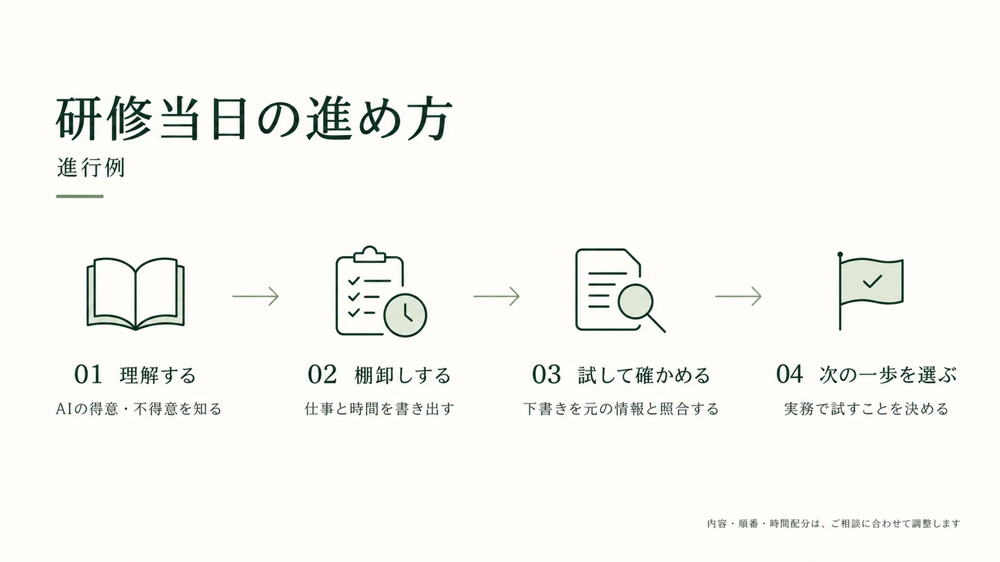

課題 01
使う人が限られる
一部の職員の工夫に頼り、チームに知識や手順が残らない。
FOR ORGANIZATION
法人研修・業務改善支援
医療・介護、産業保健の現場に合わせたAI研修と業務改善。
学んだことを日々の仕事につなげ、大切にしたいことに向き合える余白をつくります。
研修のみのご相談も、課題を整理するところからのご相談も。

YOUR CHALLENGES
ツールの使い方だけでは解決しない、組織の困りごとから考えます。
OUR APPROACH
まず、何を大切にしたいか。そのために今の仕事を見つめ直し、負担の理由を分けて考え、小さな改善につなげます。

SERVICE PLANS
必要な支援を相談で整理し、内容と費用に合意してから始めます。

学ぶ
AIの基礎と使い方を身につける見つける
仕事と負担を整理する一緒に進める
学びと課題発見を組み合わせる各プランの料金・内容は、下の比較表からご確認いただけます。
| 比較すること | 法人研修まずは学びたい | 現地訪問・業務診断課題を整理したい | 診断＋研修パック学びと課題発見を一緒に |
|---|---|---|---|
| 料金 | 個別お見積り研修内容・実施条件に応じてご案内 | 個別お見積り診断範囲・訪問条件に応じてご案内 | 個別お見積り研修と診断の組み合わせに応じてご案内 |
| 目的 | AIの基礎と使い方を学ぶ | 業務と時間を整理し、改善点を見つける | チームで学び、取り組む課題を見つける |
| 主な内容 | AIリテラシー・安全利用 文書作成・情報整理の実践 | 現場観察・ヒアリング 業務の棚卸し・改善点の整理 | 法人研修＋現地診断 共通理解・優先テーマの整理 |
| 研修 | 含む | 含まない | 含む |
| 現地診断 | 別途相談 | 含む | 含む |
| 持ち帰るもの内容はお見積り時に確認 | 当日資料 実践用ワーク 次に試すこと | 業務整理シート 改善候補一覧 次の進め方 | 研修資料・改善候補 優先テーマ 次の進め方 |
| 時間・人数・形式 | 目的や対象チームに合わせて相談し、正式なお見積りで確認します。 | ||
| 実装・継続支援 | 実装・定着・運用開発は追加オプションとして別途ご提案・個別見積もり。 | ||
| ご相談 | 研修を相談する | 診断を相談する | セットを相談する |
まずは学びたい
課題を整理したい
学びと課題発見を一緒に
研修時間・参加人数・オンライン／訪問・対象業務・教材や成果物の範囲を確認し、費用をご案内します。税区分、交通費、ツール利用料、追加支援の費用もお見積りで明示します。内容と費用に合意してから実施します。
研修時間・参加人数・オンライン／訪問・訪問地域・対象ツール・事前準備・フォロー範囲・納品物は、ご相談を踏まえ正式なお見積りで確認します。ツール利用料や個別開発、追加支援の費用は見積りで区別します。
TRAINING CONTENTS
ツール名から選ぶだけでなく、受講者の経験と業務に合わせてテーマを組み合わせます。

仕組みと限界、出力の確認、入力する情報、組織での利用ルールを考える。
文章の下書き、要約、説明資料、研修・マニュアルなどを題材に試す。
議事録の整理、共有の手順、Google Workspaceなどの活用を考える。
LEARNING GOALS
操作を覚えるだけでなく、自分たちの仕事で判断し、次の一歩を選べる状態を目指します。

入力してよい情報と、使わない場面を考える。出力をうのみにせず、確認するポイントを説明する。
大切にしたいことを起点に、業務と時間を棚卸し。入力・手順・確認・共有に分け、改善候補を見つける。
対象業務、試す方法、確認する人を決める。生まれた余白を何に使いたいか、納得感を持って選ぶ。
テーマ・経験・実施時間に合わせて目標を調整します。特定の成果や時間削減を保証するものではありません。

AIの得意・不得意を知る
仕事と時間を書き出す
下書きを元の情報と照合する
実務で試すことを決める
内容・順番・時間配分は、ご相談に合わせて組み替えます。
MATERIALS & WORKS
業務を整理するワークと、AIの下書きを確かめる練習。実際に開いて、印刷して試せる教材見本を用意しました。
次に試すことと、余白の使い方を選ぶ。
本質から考え、業務・時間の棚卸し、改善点の分解、小さな実践までを1つのワークで整理します。
棚卸しワークの実物を開く →「もっともらしい誤り」を見つける練習。
具体的な指示文と、誤りを含む出力例を比較。ツールの操作だけでなく、確認の視点も体験できます。
AI実践ワークの実物を開く →新しく作成した教材見本です。記入例・数値・出力例は架空の想定で、導入実績ではありません。実際の研修内容は対象業務に合わせて調整します。見本は別タブで開き、印刷・PDF保存ができます。
このような研修を相談する →ONLINE SERVICES
組織の課題に合わせる法人研修とは別に、新しい情報を実務につなぐ「たより」と、基礎を順番に学ぶ「いろは」を提供しています。オンラインで、自分のペースで学べる教育サービスです。

AIの動きや活用のヒントを、コラム・動画・アーカイブで学ぶサービス。現場で考え、試すきっかけを届けます。
法人・チーム向けプランを掲載しています。法人向け支援は準備中です。
たよりの内容・法人向けプランを見る →
AIの基礎・活用・実践を段階的に学ぶカリキュラム。日々の学習と振り返りを支える教育サービスです。
法人向けプランは仮案・ウェイトリストでご案内しています。
いろはの内容・法人向けプランを見る →各サービスの契約・利用条件はリンク先でご確認ください。入口の法人研修・業務診断プランへの利用料の包含はなく、組み合わせる場合は別途ご相談となります。
CASE STUDIES
これから取り組む活動や、現場で実践した内容を、この場所で共有していきます。
OUR TEAM
研修設計・AIの安全利用・現場への適合を、チームの専門領域を組み合わせて考えます。担当メンバーはテーマや対象業務に合わせてご相談します。
10人の運営メンバー 横にスライドしてご覧ください
FAQ
経験や使っているツールを事前に伺い、基礎から扱う内容を設計します。管理職・担当者・職員など、受講者に合わせたテーマをご相談ください。
どちらも相談できます。実装支援までまとめて依頼することを前提にせず、必要な範囲を整理します。
標準条件は検討中です。希望する時間・人数・場所・実施形式を伺い、対応可能な範囲と費用をお見積りでご案内します。
研修用の架空・匿名化した題材を基本に、入力してよい情報と利用環境を事前に確認します。実務への導入では、組織のルールと人が確認する箇所を整理します。
目的・内容・時間・人数・実施形式に合わせて個別にお見積りします。税区分、交通費、教材・成果物、追加費用、支払い・変更・キャンセル条件を確認し、内容と費用に合意してから実施します。
実装・定着・運用開発の支援は追加オプションです。フォロー期間・方法と、いろは・たよりの利用条件・料金は別途相談します。掲載している入口プランに、継続支援や学習サービスの利用料が自動で含まれるわけではありません。
必要ありません。課題と必要な支援を整理し、提案を持ち帰って検討できます。費用が発生する支援は、内容と条件に合意してから始めます。
FREE CONSULTATION
30分のオンライン無料相談で、今困っていることを伺います。
課題がまとまっていなくても大丈夫。研修や業務診断など、必要な支援を一緒に整理します。
必須はメールアドレス・お名前・相談区分・相談テーマの4項目。
送信後、3営業日以内を目安に日程調整のご案内をお送りします。
相談は無料です。無料相談の時点で契約・お申込みは必要ありません。研修・業務診断・追加支援は、別途ご提案する有料サービスです。
フォームは別タブで開きます。患者・利用者・従業員の個人情報や、業務上の機密情報は入力しないでください。